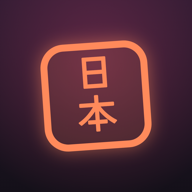

Nihondex
Belajar bahasa Jepang dan Korea. Pasang sebagai aplikasi di layar utama iPhone.
Pasang aplikasi
- Ketuk Pasang aplikasi, lalu Izinkan.
- Buka Pengaturan → Profil Diunduh (paling atas).
- Ketuk Instal, masukkan kode iPhone, lalu Instal lagi.
- Ikon Nihondex muncul di layar utama. Buka dari situ.
Tulisan "Tidak Terverifikasi" itu normal: profil ini hanya menambahkan ikon aplikasi dan bisa dihapus kapan saja di Pengaturan → Umum → VPN & Manajemen Perangkat.